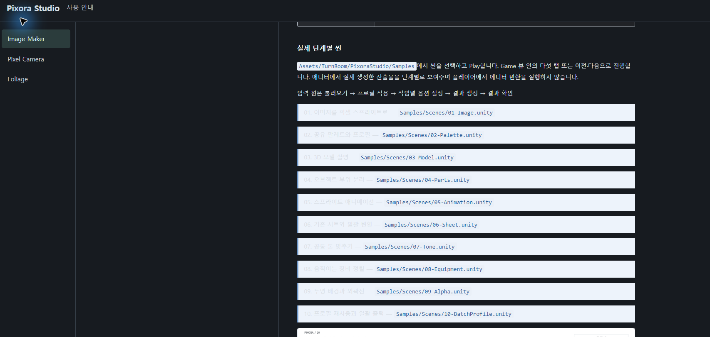

Tracefolio REPORTS & ISSUES
Tracefolio REPORTS & ISSUESPixora Studio 문서 가독성·목차·제품별 로고 수정
검증 대기iframe과 스타일 혼합을 제거하고 한 목차·공통 본문으로 정리했습니다. Studio와 세 제품의 전용 로고를 적용했습니다.
작업 결과
문서 구조·스타일·로고 연결 구현과 생성 JS 검사를 완료했습니다. 실제 브라우저 새로고침·화면 가독성은 미검증입니다.
변경 내용
적용 내용
iframe 임베드를 제거하고 기존 Image Maker·Foliage Markdown 및 Camera HTML 본문을 공통 템플릿으로 렌더링합니다. 원문·개별 가이드는 보존합니다. 목차는280px 한 영역만 쓰고 선택 제품의 장만 펼칩니다. 별도 빈 중간 열과 중복 헤더를 제거했습니다. 본문은16px/1.8 줄 간격이며 단계는 일반 목록으로, 코드·표·인용은 명시적인 어두운 배경과 밝은 글자로 표시합니다.
상단에는 실제 PixoraStudio-Symbol.jpg를, 카테고리와 본문 제목에는 Image Maker의 Pixora-Symbol.png 로봇·Camera의 PixelCameraLogoWhite.png·Foliage-Symbol.jpg를 연결했습니다. 기존 로고를 실제로 열어 확인했으며 파일을 재편집·재생성하지 않았습니다. CSS 크기 조절만 적용했습니다. 다른 제품의 고유 심볼로 대체하지 않았습니다.

검증
이전 생성기의 body 색 덮어쓰기와 원래 단계 카드의 밝은 배경이 섞였고 iframe 내부 목차가 별도 레이아웃을 차지했습니다. 새 출력에는 iframe과 이전 문서의 CSS를 포함하지 않습니다.
9개 언어의 실제 생성 JS를 최소 DOM 어댑터로 실행해 총261개 장 경로,활성 목차,언어 변경 시 장 유지,잘못된 hash 복귀를 검사했습니다. 네 로고의 실제 파일 경로를 모두 대조했습니다. 선언 CSS의 본문·보조문구·링크·코드·표·활성 항목 색 대비를 계산해 최소8.87:1을 확인했습니다. 이는 실제 브라우저 최종 렌더·이미지 위의 글자·스크린샷 내부 가독성 통과가 아닙니다.
이전 file URL 브라우저 보안 정책 거부를 우회하지 않았습니다. GUI 조작·현재 탭 새로고침·새 브라우저/서버 실행은 하지 않았고 현재 탭은 예전 내용을 유지할 수 있습니다. 업데이트를 보려면 새로고침이 필요합니다. 실제 후 화면·9언어 화면 배치·네이티브 클릭 QA와 문서 캡처는 미실행입니다.
검증 JSON은 첨부 verification.json에 보존했습니다. 프로젝트 지침에 공통 렌더링·목차·대비 검사를 기록합니다. 전역의 실제 검증·고유 심볼 보존 규칙으로 포괄되어 전역 변경 없음.
남은 사항
현재 열린 문서의 새로고침과 실제 브라우저 표시·마우스/키보드·작은 화면 배치·로고 작은 크기 가독성 및 후 화면 촬영이 남아 있습니다. 기존 가이드 내용의 전체 정확성·모든 외부 링크까지 재검증한 결과는 아닙니다.
작업 시간
- 제안 시간: 6–10분
- 실제로 완료된 시간: 2026-11-04 23:38:07 KST 시작.23:43 KST까지 구현·스크립트/대비 검사 완료. 실제 브라우저 화면 검증은 미완료.
- XERJ: 실패 — Status node not running. rg·현재 생성기·사용자 캡처·로고 원본·생성 JS를 대조했습니다.